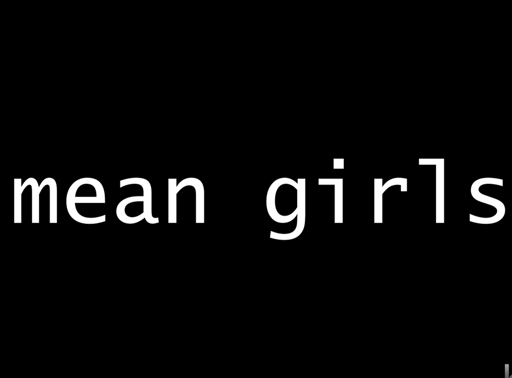

Portfolio

Title: Women2026
This is a time based mashup that honors the Women during Women's History Month. I had chosen to take a path towards focusing on women in the music industry. Each woman featured represents a unique voice and contribution to the industry. Each woman featured has been titled some sort of negative connotation. The music in the back is from the music group, Katseye, and they impliment how the figures in the video are potrayed diffferetnly. As the video progesses, you should begin to understand they are not truly mean. They are just powerful women that can make a statement in our male dominate field. click THIS TEXT to watch the videobelow are links to all of the media I had used to create this mashup
britney spears, baby one more time
hayley kiyoko, what i need ft kehlani
sinead o'connor, nothing compares 2 ulorde + charlie xcx, girl so confusing
billie eilish, what was i made for?